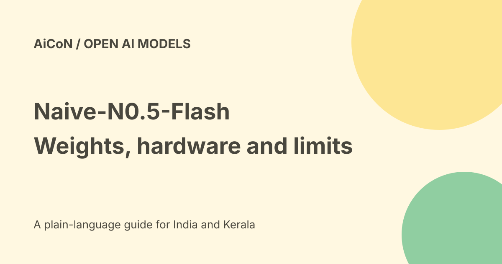

Naive-N0.5-Flash: open weights, big hardware and runtime limits
Naive-N0.5-Flash is a 309-billion-parameter open-weight model for coding and AI research. Its model card lists an MIT licence and a native one-million-token context. This is developer infrastructure, not a small offline app for an ordinary phone or laptop.

What do the size numbers mean?
NaiveAI describes a mixture-of-experts model with 309 billion total parameters and 15.5 billion active parameters. A subset of the model is used for each token, but that does not make the whole checkpoint small enough for a normal laptop.
The card says FP 8 weights occupy about 315 GB and require FP 8-capable NVIDIA GPUs, with extra GPU memory needed for inference. Download size is not a complete estimate of server memory, storage or operating cost.
A large context is not perfect memory
The native context limit is one million tokens. Tokens are pieces of text, not a fixed number of English words. A large context allows more material into a request, but does not guarantee that every detail will be found or used correctly.
The vendor describes sliding-window attention and sparse attention instead of full-attention layers. This is an architecture choice. It is not proof of unlimited recall, correct reasoning or safe automated coding.
What is actually available?
The public model card and weights are available under the stated MIT licence. The research page also describes NaiveRT, an optimised runtime. Its detailed release section says the runtime code, build environment and related assets will be available by 12 October.
On our 7 October check, that wording is a future promise. The earlier post's statement that anyone could already inspect the runtime code was too broad. Read the actual repository before assuming the promised release has landed.
Understand the speed claim
NaiveAI reports a peak 2,122 tokens per second on eight GPUs. The detailed method measures the best one-second window, with thinking off, across 41 HTML/SVG requests. It excludes prefill, the stage that processes the input prompt.
This is a vendor result for those conditions, not an independent test or a guaranteed API speed. End-to-end response time, long prompts and concurrent users can look different. No GPU benchmark was reproduced for this guide.
API cost and India checks
The card says API access will be provided. Its stated rates per million tokens are US$0.10 input, US$0.40 output and US$0.01 cache reads. Using an approximate ₹96.34 per US dollar reference, those are about ₹9.64, ₹38.54 and ₹0.96 respectively, before taxes or fees.
These are announced rates, not a verified final checkout or proof that an Indian account can use the service today. We did not test sign-up, INR billing, API availability, Malayalam quality or Indian data hosting. Free model weights do not make paid GPUs or an API free.
A safer developer evaluation
- Read the official model card and licence.
- Check your hardware against the actual checkpoint and memory requirements.
- Verify that the runtime release you intend to use is really present.
- Inspect dependencies and any code loaded by the model. The card's example uses trust_remote_code, which permits downloaded code to run.
- Start in an isolated environment with invented data and a tiny coding task.
- Inspect the generated files and run tests before using the result.
- Limit file, shell and network access. Keep review before production changes.
- For an API, confirm current billing and data terms before adding private code.
What changed since the original post?
We distinguish open model weights from the future runtime-code release, label the exact speed-test conditions and update the approximate INR conversions. The API's future-tense wording is retained. No account, download or server was set up.
Frequently asked questions
Can I run it on a normal phone?
The published hardware requirements do not support that assumption.
Does MIT mean zero cost?
No. Hardware, hosting and API usage can cost money.
Is 2,122 tokens per second guaranteed?
No. It is the vendor's peak under stated test conditions.
Is the runtime code already released?
The checked detailed page promises availability by 12 October. Verify the repository when you plan to use it.
Sources: Official model card and licence · Official research and runtime release notes · Official product page · Approximate USD/INR reference. Checked 7 October 2026.